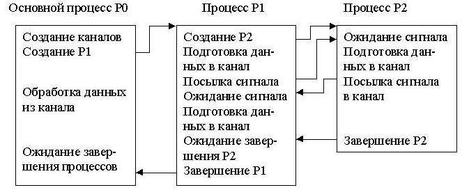
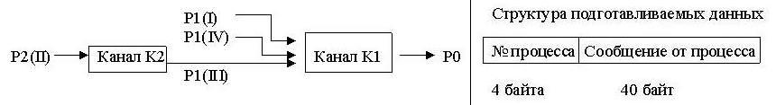
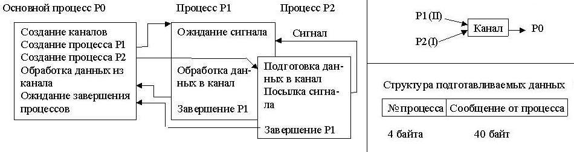
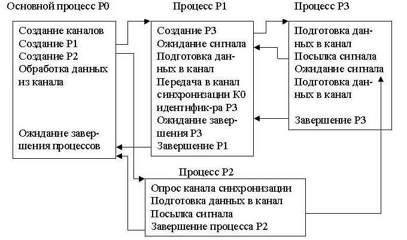
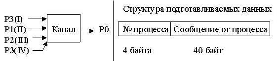
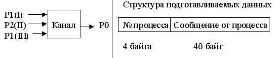
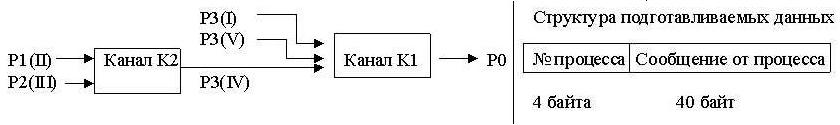
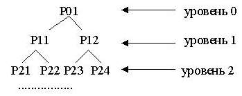
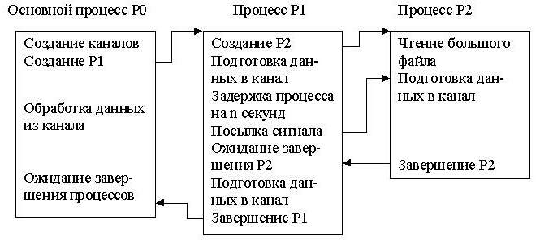
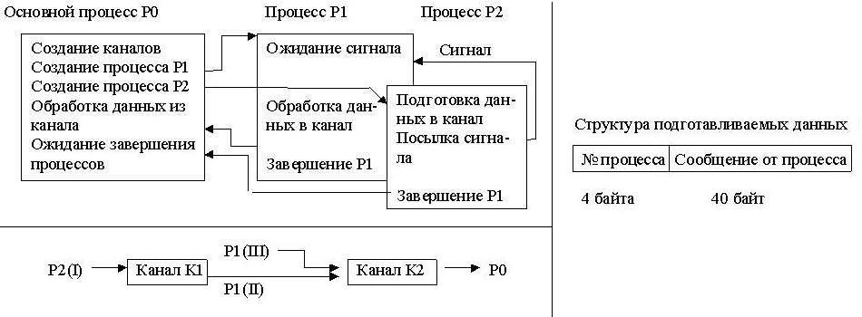

Синхронизация процессов
Практическое освоение механизма синхронизации процессов и их взаимодействия посредством программных каналов.
-
Ознакомиться с заданием к лабораторной работе.
-
Выбрать набор системных вызовов, обеспечивающих решение задачи.
-
Для указанного варианта составить программу на языке Си, реализующую требуемые действия.
-
Отладить и оттестировать составленную программу, используя инструментарий ОС UNIX.
-
Защитить лабораторную работу, ответив на контрольные вопросы.
В предыдущей лабораторной работе были рассмотрены различные программные средства, связанные с созданием и управлением
процессами в рамках ОС UNIX. Данная лабораторная работа предполагает комплексное их использование при решении задачи
синхронизации процессов и их взаимодействия посредством программных каналов. Кратко перечислим состав системных вызовов,
требуемых для выполнения данной лабораторной работы:
-
Создание, завершение процесса, получение информации о процессе, - fork(),
exit(), getpid(), getppid().
-
Синхронизация процессов - signal(), kill(), sleep(),
alarm(), wait(), pause().
-
Создание информационного канала и работа с ним - pipe(), read(),
write().
-
Исходный процесс создает два программных канала К1 и К2 и порождает новый процесс Р1, а тот, в свою очередь, еще
один процесс Р2, каждый из которых готовит данные для обработки их основным процессом. Подготавливаемые данные процесс
Р1 помещает в канал К1, а процесс Р2 в канал К2, откуда они процессом Р1 копируются в канал К1 и дополняются новой
порцией данных. Схема взаимодействия процессов, порядок передачи данных в канал и структура подготавливаемых данных
показаны ниже:


Обработка данных основным процессом заключается в чтении информации из программного канала К1 и печати её. Кроме того,
посредством выдачи сообщений необходимо информировать обо всех этапах работы программы (создание процесса, завершение
посылки данных в канал и т.д.).
-
Исходный процесс создает программный канал К1 и порождает два процесса Р1 и Р2, каждый из которых готовит данные для
обработки их основным процессом. Подготовленные данные последовательно помещаются процессами-сыновьями в программный
канал и передаются основному процессу. Схема взаимодействия процессов, порядок передачи данных в канал и структура
подготавливаемых данных показаны ниже:

Обработка данных основным процессом заключается в чтении информации из программного канала и печати её. Кроме того,
посредством выдачи сообщений необходимо информировать обо всех этапах работы программы (создание процесса,
завершение посылки данных в канал и т.д.).
-
Исходный процесс создает программный информационный канал К1, канал синхронизации К0 и порождает два процесса Р1 и Р2,
из которых один (Р1) порождает еще один процесс Р3. Назначение всех трех порожденных процессов - подготовка данных для
обработки их основным процессом. Подготовленные данные последовательно помещаются процессами-сыновьями в программный
канал К1 и передаются основному процессу. Кроме того, процесс Р1 через канал синхронизации К0 сообщает процессу Р2
идентификатор процесса Р3 с тем, чтобы процесс Р2 мог послать процессу Р3 сигнал. Схема взаимодействия процессов,
порядок передачи данных в канал и структура подготавливаемых данных показаны ниже:


Обработка данных основным процессом заключается в чтении информации из программного канала и печати её. Кроме того,
посредством выдачи сообщений необходимо информировать обо всех этапах работы программы (создание процесса,
завершение посылки данных в канал и т.д.).
-
Исходный процесс создает программный канал К1 и порождает новый процесс Р1, а тот, в свою очередь, еще один процесс Р2,
каждый из которых готовит данные для обработки их основным процессом. Подготовленные данные последовательно помещаются
процессами-сыновьями в программный канал и передаются основному процессу. Схема взаимодействия процессов, порядок
передачи данных в канал и структура подготавливаемых данных показаны ниже:

Обработка данных основным процессом заключается в чтении информации из программного канала и печати её. Кроме того,
посредством выдачи сообщений необходимо информировать обо всех этапах работы программы (создание процесса, завершение
посылки данных в канал и т.д.).
-
Исходный процесс создает два программных информационных канала К1 и К2, канал синхронизации К0 и порождает два
процесса Р1 и Р2, из которых один (Р1) порождает еще один процесс Р3. Назначение всех трех порожденных процессов -
подготовка данных для обработки их основным процессом. Подготавливаемые данные процесс Р3 помещает в канал К1, а
процессы Р1 и Р2 в канал К2, откуда они процессом Р3 копируются в канал К1 и дополняются новой порцией данных.
Кроме того, процесс Р1 через канал синхронизации К0 сообщает процессу Р2 идентификатор процесса Р3 с тем, чтобы
процесс Р2 мог послать процессу Р3 сигнал. Схема взаимодействия процессов, порядок передачи данных в канал и
структура подготавливаемых данных показаны ниже:

Обработка данных основным процессом заключается в чтении информации из программного канала К1 и печати её. Кроме
того, посредством выдачи сообщений необходимо информировать обо всех этапах работы программы (создание процесса,
завершение посылки данных в канал и т.д.).
-
Программа порождает иерархическое дерево процессов. Каждый процесс выводит сообщение о начале выполнения, создает пару
процессов, сообщает об этом, ждет завершения порожденных процессов и затем заканчивает работу. Поскольку действия в
рамках каждого процесса однотипны, эти действия должны быть оформлены отдельной программой, загружаемой системным вызовом
exec(). Параметр программы - число уровней (не более 5).

-
Исходный процесс создает программный канал К1 и порождает новый процесс Р1, а тот, в свою очередь, порождает
ещё один процесс Р2. Подготовленные данные последовательно помещаются процессами-сыновьями в программный канал
и передаются основному процессу. Файл, читаемый процессом Р2, должен быть достаточно велик с тем, чтобы его
чтение не завершилось ранее, чем закончится установленная задержка в n секунд. После срабатывания будильника
процесс Р1 посылает сигнал процессу Р2, прерывая чтение файла. Схема взаимодействия процессов, порядок передачи
данных в канал и структура подготавливаемых данных показаны ниже:

Обработка данных основным процессом заключается в чтении информации из программного канала и печати её. Кроме
того, посредством выдачи сообщений необходимо информировать обо всех этапах работы программы (создание процесса,
завершение посылки данных в канал и т.д.).
-
Исходный процесс создает программный канал К1 и порождает два процесса Р1 и Р2, каждый из которых готовит данные для
обработки их основным процессом. Подготовленные данные последовательно помещаются процессами-сыновьями в программный
канал и передаются основному процессу. Схема взаимодействия процессов, порядок передачи данных в канал и структура
подготавливаемых данных показаны ниже:
Обработка данных основным процессом заключается в чтении информации из программного канала и печати её. Кроме того,
посредством выдачи сообщений необходимо информировать обо всех этапах работы программы (создание процесса,
завершение посылки данных в канал и т.д.).
-
Исходный процесс создает два программных канала К1 и К2 и порождает два процесса Р1 и Р2, каждый из которых готовит
данные для обработки их основным процессом. Подготавливаемые данные процесс Р2 помещает в канал К1, затем они оттуда
читаются процессом Р1, переписываются в канал К2, дополняются своими данными. Схема взаимодействия процессов, порядок
передачи данных в канал и структура подготавливаемых данных изображены ниже:

Обработка данных основным процессом заключается в чтении информации из программного канала К2 и печати её. Кроме
того, посредством выдачи сообщений необходимо информировать обо всех этапах работы программы (создание процесса,
завершение посылки данных в канал и т.д.).